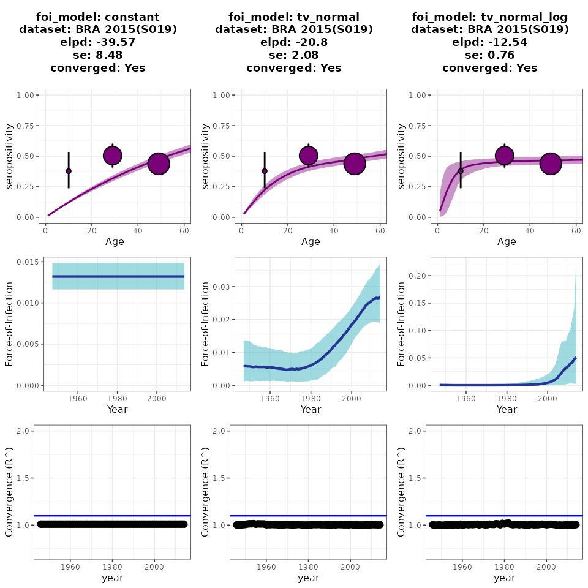
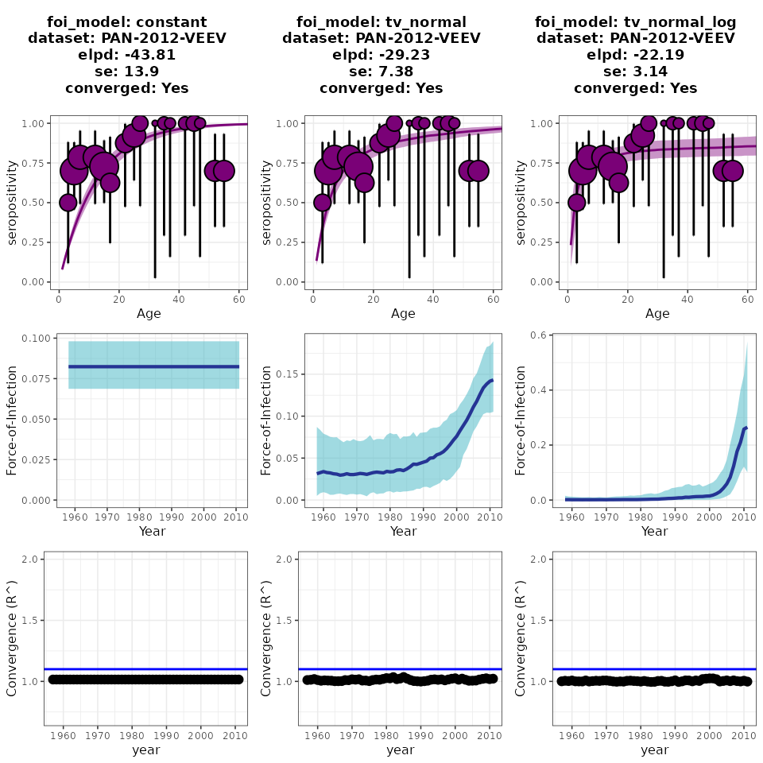
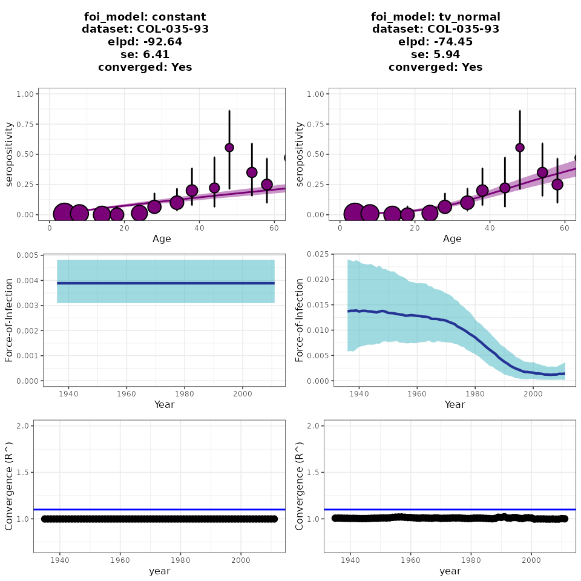

use_cases.RmdThe serofoi package is a tool for estimating the Force-of-Infection (FoI) from population-based serosurvey data. In this article, we present three real-life epidemiological scenarios from Latin America to demonstrate the utility of serofoi and time-varying models in describing the trajectory of the FoI. For inclusion criteria about serosurvey data and model assumptions, please check Get Started.
The scenarios were chosen to showcase the versatility of the serofoi package in different epidemiological contexts:
Chikungunya is a viral disease that was first described during an outbreak in Tanzania in 1952. For several decades, it was primarily found in Africa and Asia. However, in 2004, the first Chikungunya outbreak outside of these regions occurred on the island of Réunion in the Indian Ocean. Since then, Chikungunya has spread rapidly throughout the world, including to the Americas, Europe, and the Pacific region. In 2013, the first cases of Chikungunya were reported in the Americas, and the virus has since become endemic in several countries in Latin America. The transmission of Chikungunya is primarily through the bites of infected Aedes mosquitoes, with humans serving as the primary amplifying host. The symptoms of Chikungunya include fever, joint pain, headache, muscle pain, and rash, and the disease can range from mild to severe. Although Chikungunya is not typically fatal, it can cause significant morbidity and has the potential to cause large-scale outbreaks, making it an important public health concern. The methodological challenge is how best to estimate the disease burden untangling the endemic and epidemic patterns in several locations around the world. Here serofoi can assist with these estimates.
To gain insights into the transmission dynamics of Chikungunya in the Americas, we used a dataset from a population-based study conducted in Bahia, Brazil in October-December 2015. This study, conducted by Dias et al. (2018), involved household interviews and age-disaggregated serological surveys to measure IgG antibodies against the Chikungunya virus. The survey was conducted immediately after a large Chikungunya epidemic in the area.
serofoi was used to compare three potential scenarios of Chikungunya transmission: constant endemic, epidemic slow, and epidemic fast. Figure 3 displays the comparison between the three serofoi models. The results reveal strong statistical support for model 3 (fast epidemic model) suggesting a sudden increase in the transmission of Chikungunya close to the year of the serosurvey (2015). The exact year is difficult to estimate due to the large level of aggregation of the data, which is divided into 20-year age groups. Nevertheless, these results are consistent with the empirical evidence from Dias et al. (2018), who used both interviews and IgM testing to show a similar increase in transmission during this period.
# Load and prepare data
data("chik2015")
chik2015p <- prepare_serodata(chik2015)
# Implementation of the models
m1_chik <- run_seromodel(
serodata = chik2015p,
foi_model = "constant",
iter = 1000,
thin = 2
)
m2_chik <- run_seromodel(
serodata = chik2015p,
foi_model = "tv_normal",
iter = 1500,
thin = 2
)
m3_chik <- run_seromodel(
serodata = chik2015p,
foi_model = "tv_normal_log",
iter = 1500,
thin = 2
)
# Visualisation of the results
p1_chik <- plot_seromodel(m1_chik,
serodata = chik2015p,
size_text = 6
)
p2_chik <- plot_seromodel(m2_chik,
serodata = chik2015p,
size_text = 6
)
p3_chik <- plot_seromodel(m3_chik,
serodata = chik2015p,
size_text = 6
)
cowplot::plot_grid(p1_chik, p2_chik, p3_chik, ncol = 3) Figure 1. Serofoi models for FoI estimates of Chikungunya virus transmission in an urban remote area of Brazil.
emerging alphaviruses, including Venezuelan Equine Encephalitis Virus (VEEV), are RNA viruses that can cause disease in both humans and animals. They are primarily transmitted by mosquitoes and have a complex transmission cycle that involves human and non-human hosts, including birds and mammals. Alphaviruses can cause significant morbidity and mortality. Hidden epidemics and endemic transmission of alphaviruses have been occurring in small and remote communities of Eastern Panama for decades without major notice (Carrera et al. 2020). The main concern with alphaviruses is their potential to spill over into human populations and reach highly populated cities and urban areas where humans are more susceptible. The Darien province in Eastern Panama, bordering the north of Colombia to the south and the Pacific Ocean, is home to several indigenous communities who live in traditional and remote villages. Notably, the area is also a critical crossing point for illegal immigration from Africa and South America to the north of the Americas. Estimating the temporal trends of the incidence of alphaviruses in this region is a methodological challenge but critical to inform control strategies. serofoi can assist with these estimations.
From (Carrera et
al. 2020), we use a dataset measuring IgG antibodies against
VEEV in a rural village in Panamá in 2012. VEEV is
primarily transmitted by mosquitoes and can cause disease in horses and
humans. This dataset, veev2012 is included in
serofoi.
serofoi was used to compare three potential
scenarios of VEEV transmission: constant endemic,
epidemic slow, and epidemic fast. The results showed a
significant increase in the estimated Force-of-Infection (FoI)
in the region, indicating a rise in VEEV transmission. The
study found that there was much higher statistical support for a
time-varying rather than a constant scenario based on higher elpd and
lower se values of the two time-varying models compared to the constant
one (Figure 2). The results also suggest slightly (yet relevant) better
support for model 3 (tv-nomal-log), compared to model 2
(tv-normal), suggesting a recent increase in transmission
in the study area.
# Load and prepare data
data("veev2012")
veev2012p <- prepare_serodata(veev2012)
# Implementation of the models
m1_veev <- run_seromodel(
serodata = veev2012p,
foi_model = "constant",
iter = 500,
thin = 2
)
m2_veev <- run_seromodel(
serodata = veev2012p,
foi_model = "tv_normal",
iter = 500,
thin = 2
)
m3_veev <- run_seromodel(
serodata = veev2012p,
foi_model = "tv_normal_log",
iter = 500,
thin = 2
)
# Visualisation of the results
p1_veev <- plot_seromodel(m1_veev,
serodata = veev2012p,
size_text = 6
)
p2_veev <- plot_seromodel(m2_veev,
serodata = veev2012p,
size_text = 6
)
p3_veev <- plot_seromodel(m3_veev,
serodata = veev2012p,
size_text = 6
)
cowplot::plot_grid(p1_veev, p2_veev, p3_veev, ncol = 3) Figure 2. serofoi models for FoI estimates of Venezuelan Equine Encephalitis Virus (VEEV) transmission in a rural remote area of Panama.
Chagas disease is a parasitic infection caused by the protozoan Trypanosoma cruzi. It is only endemic to Latin America, where it is transmitted to humans through the bite of infected triatomine bugs, which have been present in the Americas for thousands of years. Triatomine bugs have established domiciliary habits, living inside houses and biting humans. Insecticide spraying is the primary control strategy for Chagas disease, as it effectively reduces the population of triatomine bugs, the main vector of the disease, in domestic environments. According to (Cucunubá et al. 2017), interventions for Chagas disease control have been ongoing in Colombia since the 1980s, with a heterogeneous impact depending on the type of setting, environment, and population. There is a methodological challenge in how best to estimate the historical effectiveness of these control strategies across endemic areas. Here serofoi can assist with these estimations.
Based on the data and analysis shown in (Cucunubá et al. 2017), we use one of
the datasets that measure the seroprevalence of IgG antibodies against
Trypanosoma cruzi infection in rural areas of Colombia. The
dataset is part of the serofoi package as
chagas2012. This dataset corresponds to a serosurvey
conducted in 2012 for a rural indigenous community known to have
long-term endemic transmission, where some control interventions have
taken place over the years. ### The result
Because Chagas is an endemic disease, we should use only the
serofoi endemic models (1.
constant, 2. tv-normal) on the
chagas2012 dataset and compare which model is better
supported. The results are shown in Figure 3. We found that for this
serosurvey, both serofoi models converged
(based on R-hat values not crossing 1.1), but the comparison of the two
models shows a relevant slow decreasing trend, which was consistent with
model 2 - tv-normal. This model was statistically better
supported based on the highest elpd and lowest
se values compared to the constant model. These results
suggest a slow, still relevant decrease in the FoI values over
the last decades which may have been a consequence of some of the
interventions or local environmental changes that have occurred in the
study area over the years, up to the point (2012) when the serosurvey
was conducted.
# Load and prepare data
data("chagas2012")
chagas2012p <- prepare_serodata(chagas2012)
# Implementation of the models
m1_cha <- run_seromodel(
serodata = chagas2012p,
foi_model = "constant",
iter = 800
)
m2_cha <- run_seromodel(
serodata = chagas2012p,
foi_model = "tv_normal",
iter = 800
)
# Visualisation of the results
p1_cha <- plot_seromodel(
m1_cha,
serodata = chagas2012p,
size_text = 6
)
p2_cha <- plot_seromodel(
m2_cha,
serodata = chagas2012p,
size_text = 6
)
cowplot::plot_grid(p1_cha, p2_cha, ncol = 2) Figure 3. serofoi endemic models for FoI estimates of Trypanosoma cruzi in a rural area of Colombia. ## References